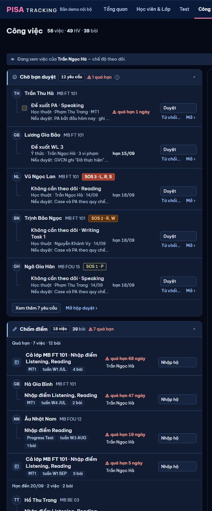
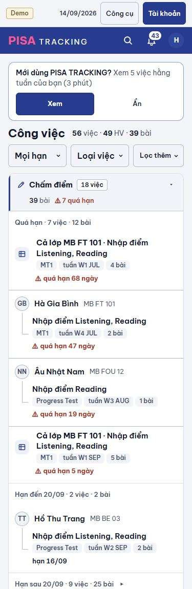

Chủ SP 05/11: "cải thiện cái cũ thôi". Bố cục, nhóm, thứ tự, màu, nút, panel giữ nguyên như web hiện tại (U01 đã duyệt). Chỉ đổi: độ đậm chữ, bỏ chữ thừa, không lặp tên GV, nút / thẻ không xuống dòng, luật đếm nhỏ lại (S11, bảng D), kẻ rõ giữa các việc (S12) và mỗi trường một dáng (S13). Mọi thao tác giữ (bảng C). Demo Monbay, hôm nay 14/09/2026 · W3 SEP. 1440 tối · 375 sáng. Trái = ảnh chụp web hiện tại (main), phải = sau khi sửa.
S1chỉ tên em đậm · S3không lặp "Trần Ngọc Hà" ở từng dòng (dải "Đang xem việc của…" đã nói) · S6không khối "Chờ bạn duyệt" của QL khi xem một GV · S2"1 bài" cùng hàng · S10vạch hạn chỉ ghi tên.

S4Chờ bạn duyệt: mỗi yêu cầu 2 dòng (bỏ dòng "Nếu duyệt: …" — xem khi rê chuột / mở panel duyệt) · S1người giữ việc chữ thường mờ · S5nút "Chấm" một dòng · S3bỏ "GV chấm chéo" ở từng dòng (tên nhóm đã nói) · S7chữ khung chờ ở đầu.
S8dải nhóm một hàng · S2thẻ phụ một hàng · S1hạn thường chữ mờ, chỉ quá hạn đỏ đậm.

/my-work)Luật mới: một dòng việc = 1 (dòng gộp "Cả lớp" = 1, không nhân kỹ năng × em). Badge chỉ đếm việc của tôi cần làm ngay (quá hạn + hạn hôm nay), 0 thì không hiện số, đỏ khi có quá hạn. Số bài / số em chỉ còn ở thẻ phụ trong dòng ("4 bài", "4 em").
| Chỗ | Trước | Sau |
|---|---|---|
| Badge Công việc · GV cô Hà | 56 | 9 (đỏ — 9 dòng quá hạn, 0 hạn hôm nay) |
| Badge Công việc · QL Vy | 5 | không số (5 dòng của Vy, chưa dòng nào quá hạn / hôm nay) |
| Đầu trang · GV cô Hà | 56 việc · 49 HV · 39 bài | — (bỏ) |
| Đầu trang · QL Tất cả | 147 việc · 80 HV · 89 bài | — (bỏ) |
| Ô phạm vi · QL | Của tôi 5 · Của GV 142 · Tất cả 147 | Của tôi · Của GV · Tất cả (Của tôi có số khi > 0 = badge) |
| Chấm điểm · cô Hà | 18 việc · 39 bài · ⚠ 7 quá hạn | 7 việc · ⚠ 4 quá hạn |
| Case học thuật · cô Hà | 27 việc · 20 HV · ⚠ 3 | 16 việc · ⚠ 3 |
| Ý thức & Phối hợp · cô Hà | 6 việc · 6 HV · ⚠ 2 | 2 việc · ⚠ 2 |
| Vận hành · cô Hà | 5 việc | 2 việc |
| Chấm điểm · QL Tất cả | 46 việc · 89 bài · ⚠ 17 | 26 việc · ⚠ 14 |
| Case học thuật · QL Tất cả | 67 việc · 34 HV · ⚠ 5 | 39 việc · ⚠ 5 |
| Speaking chấm chéo · QL | 18 bài | ⚠ 2 quá hạn (không số việc — T03: không phải việc của ai) |
| Chờ bạn duyệt · QL | 12 yêu cầu · ⚠ 1 | giữ (một dòng = một yêu cầu) |
| Vạch hạn | Quá hạn · 7 việc · 12 bài | Quá hạn (vạch gập "Hạn sau 20/09 · 2 việc ▸") |
So sánh, chọn một: ① (khuyến nghị) badge = dòng của tôi quá hạn + hôm nay → cô Hà 9, QL 0: số nhỏ, đúng "việc phải làm bây giờ". ② badge = mọi dòng của tôi → cô Hà 27: vẫn lớn, không nói việc nào gấp. ③ badge chỉ quá hạn → 9: việc hạn hôm nay không được nhắc kịp. Đổi ở máy chủ: server/src/worklist/mywork.ts demSo thêm số dòng cần làm ngay; badge web/src/App.tsx SoCho; DESIGN V13 (#886). Không thêm câu SQL / dòng đọc Turso.